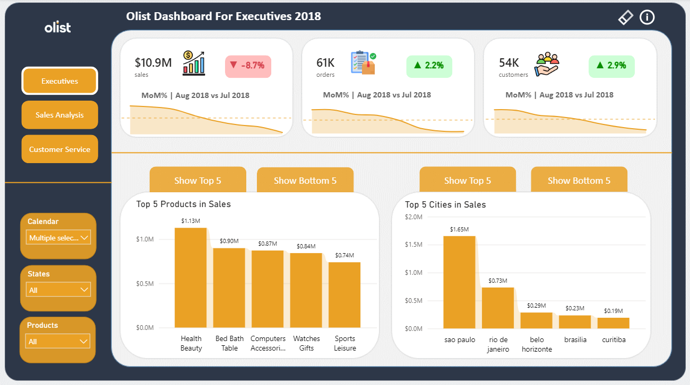

E-Commerce Store Sales & Delivery Analysis
An interactive three-page Power BI report built on about 100,000 Olist marketplace orders. Executives, sales teams and operations teams each get their own view of revenue, customer behavior and delivery quality.
- Tools
- SQL, Power BI, DAX
- Dataset
- Olist Brazilian E-Commerce Public Dataset (Kaggle), 2016 to 2018
- Type
- Portfolio project on public data
Executive dashboard

Click the image to view it full size. Figures are for the filter selection shown on the dashboard.
Business problem
Leadership, sales and operations teams look at the same order data for different reasons. Executives need headline numbers and growth, sales teams need to see how orders and customers move over time, and operations teams need to know whether orders arrive when promised. One flat report serves none of them well.
This project turns the order data into a single report with three tailored pages, built to answer these questions:
- Revenue and growth: how much revenue was generated, whether it is growing month over month, and which categories and cities drive it.
- Orders and customers: how order volume and unique customers trend, and which payment methods customers prefer.
- Delivery quality: what share of orders are delivered, how many arrive on time, where late deliveries concentrate, and how late they are.
Objective
Design and deliver an end-to-end Power BI solution covering the full BI lifecycle: data modelling, DAX measures, report design, and interactive navigation.
Data and preparation
The data is the Olist Brazilian E-Commerce Public Dataset from Kaggle: about 100,000 orders placed between 2016 and 2018 across Brazil. The grain is one row per order item, so an order can contain several items.
The model uses these tables: Orders, Customers, Products (categories translated to English), Payments, Order Items, Reviews, and a Date table for time intelligence.
- [SQL step you actually did, e.g. joined the order, item and payment tables]
- [Cleaning step, e.g. handled missing delivery dates or translated category names]
- 1
CSV Files
- 2CSV extract
PostgreSQL ETL
ETL
- 3ETL load
Cleaned Tables
- 4validation input
Quality Checks
Data quality validation
Checks cover duplicate removal, null handling, foreign-key validation, calculated metrics, and performance aggregates.
- 5validated data
Power BI model
- 6report publication
Published Dashboard
Data model and KPIs
The report is driven by DAX measures in three groups:
- Core: sales (sum of payment values), orders (distinct order IDs), customers (distinct customer IDs).
- Time intelligence: month-over-month % change and absolute variance for sales, orders and customers, shown as dynamic text on the KPI cards.
- Fulfilment: Delivered Orders %, On-time delivery %, Average Delivery Delay, and Average late Delivery Delay (days beyond the estimated date, for late orders only).
The three report pages
| Page | Audience | Key visuals |
|---|---|---|
| Executives | Senior management | 3 KPI cards with MoM % and sparklines, Top/Bottom 5 products, Top/Bottom 5 cities |
| Sales Analysis | Sales managers, analysts, marketing | Orders and customers trend, payment type donut, KPI cards, table view, time-granularity toggles |
| Customer Service | Operations, logistics, support | 4 delivery KPI cards, order status funnel, undelivered orders chart, top late-delivery cities, table view |
Shared across pages: global slicers (Year Month, State, Product Category), a Reset All Slicers button, consistent page navigation, and an information overlay describing each visual.
Sales Analysis page

Customer Service page

Main insights
Figures below come from the executive dashboard shown above, for its selected filters.
- Health & Beauty was the top product category by sales (1.13M), ahead of Bed, Bath & Table (0.90M) and Computers Accessories (0.87M).
- São Paulo led all cities with 1.65M in sales, more than twice second-placed Rio de Janeiro (0.73M).
- In August 2018 versus July 2018, sales fell 8.7% while orders rose 2.2% and customers rose 2.9%. Together, that means revenue per order fell by roughly 10%.
- [One insight from the Customer Service page, with its number, e.g. on-time delivery rate]
Business recommendations
- Find out why revenue per order fell in August 2018: a shift toward lower-priced categories, discounting, or changes in freight or payment mix.
- Treat the gap between São Paulo and other cities as a question for marketing: is it demand, or reach? Test campaigns in selected cities and compare.
- [A recommendation from the delivery analysis, based on the late-delivery cities or order status results]
Repository
The SQL, Power BI file and documentation are on GitHub.